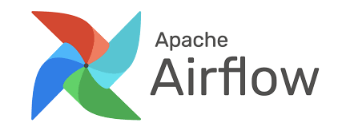
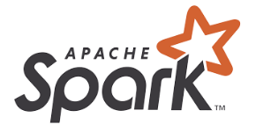
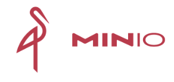
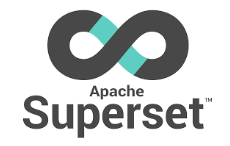
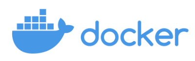
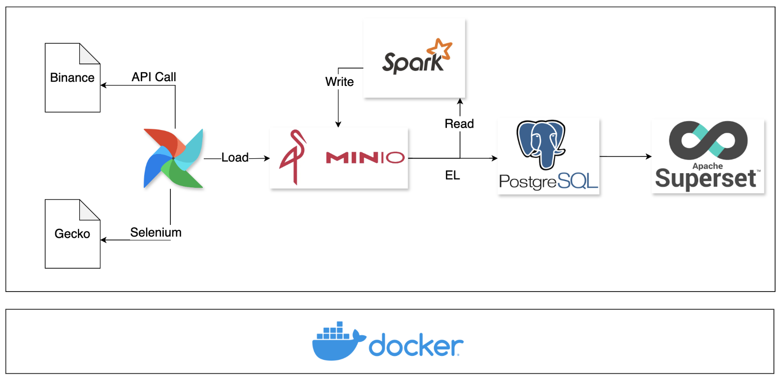
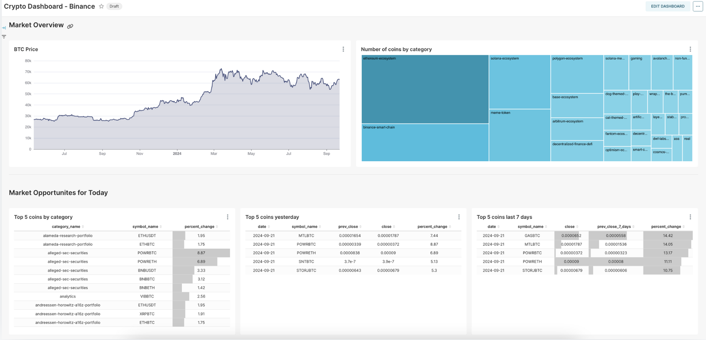

The product offers useful information to help users identify potential investment opportunities, tracking top-performing coins, such as the highest gainers of the day or the best performers over the last week.
Designed to build a scalable, automated data pipeline that collects, processes, and visualizes cryptocurrency data from multiple sources.
The entire pipeline runs daily in a dockerized environment, ensuring ease of deployment across different platforms
System stores raw data and transform it into usable format, serving data analytics.

Airflow
Selenium

Apache Spark
PostgreSQL

Minio

SuperSet

Docker

All components (Airflow, Binance API, Coin Gecko bot, Minio, Spark, PostgreSQL, SuperSet) are containerized and run within a Docker environment to ensure portability and ease of deployment.
Airflow orchestrates the pipeline, triggering two key tasks: Call the Binance API to fetch cryptocurrency data. Execute a web-scraping bot to collect additional data from Coin Gecko. Both data sources are collected and stored in Minio (object storage system) in a raw format.
Apache Spark is triggered to read the raw data from Minio.
Spark processes and cleans the data, performs necessary transformations, and saves the processed output back to Minio.
The processed data from Minio is then loaded into PostgreSQL for structured storage and querying.
Apache Superset is connected to PostgreSQL, allowing users to visualize and explore the processed cryptocurrency data through interactive dashboards and reports.

The Cryptocurrency Performance Dashboard demonstrates a quick look of the top-performing cryptocurrencies, helping users quickly identify investment opportunities.
Key charts and features include:
Top Gainers in a Day: This chart highlights the cryptocurrencies with the highest gains over the last 24 hours, providing a quick snapshot of short-term market winners. It allows users to stay informed about sudden price surges and take timely action.
Top Gainers Over the Last Week: This chart displays the best-performing coins over the past seven days, helping users spot trends and sustained growth opportunities. By analyzing longer-term performance, investors can make more informed decisions about potential long-term investments.
Top Gainers by Coin Category: This section groups cryptocurrencies into categories (such as DeFi, NFTs, or Layer 1 platforms) and shows the top gainers within each category. It enables users to track performance in specific sectors of the market, offering valuable insights into which segments are gaining traction.